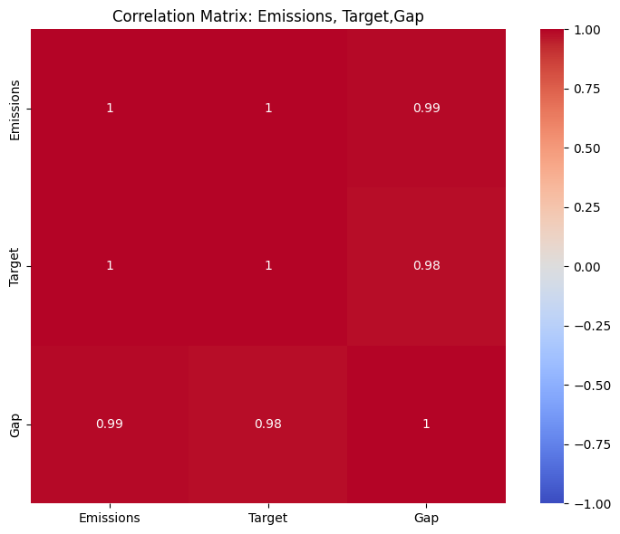
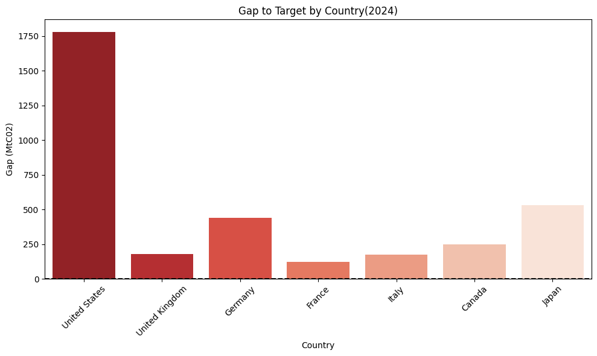
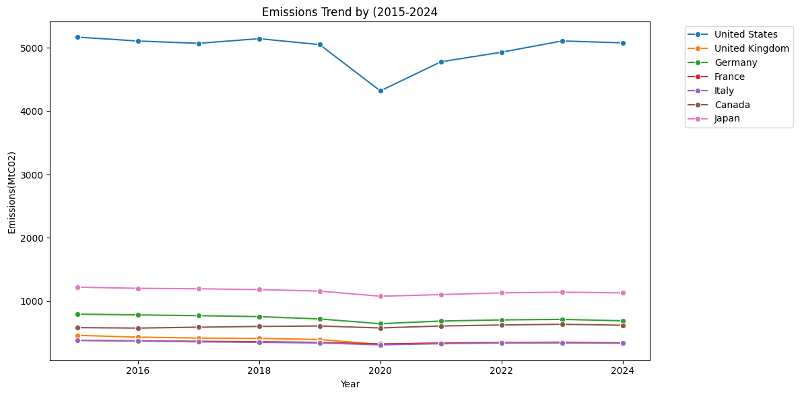
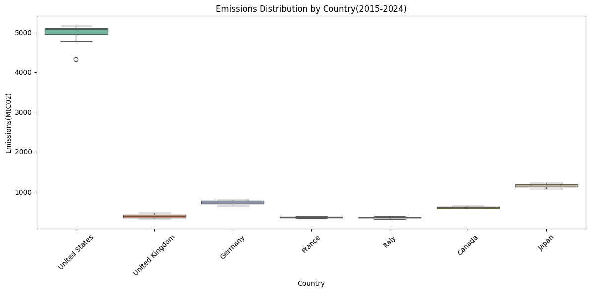
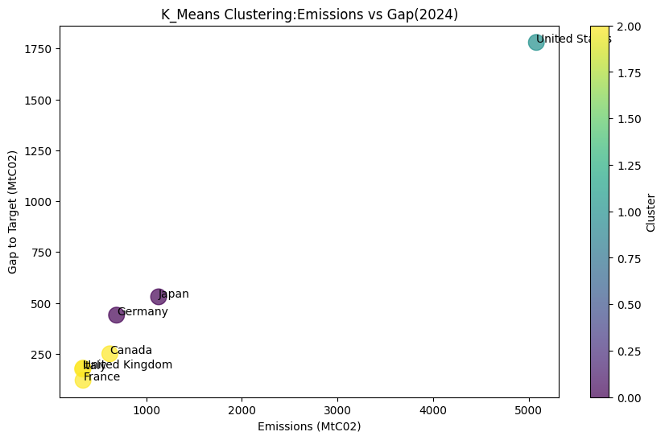

Executive Overview
This project evaluates whether the climate commitments made by G7 nations are supported by measurable emissions reductions. Using emissions data from 2015–2024, the analysis compares actual country performance against 2030 climate targets to assess policy implementation, accountability and progress toward international climate goals.
Policy Problem
The G7 countries regularly announce ambitious climate commitments, yet measurable progress remains uncertain. This project investigates whether policy commitments are translating into real emissions reductions and identifies where implementation gaps remain.
Project Objectives
Methodology
The project followed a structured climate analytics workflow that combined spreadsheet modelling, Business Intelligence dashboards and Python-based statistical analysis to evaluate the climate performance of G7 countries between 2015 and 2024.
Data Preparation
Climate datasets were cleaned, validated and organised in Google
Sheets before being prepared for analysis and visualisation.
Exploratory Analysis
Historical greenhouse gas emissions were analysed to identify long-term
trends, annual changes and differences between G7 member countries.
Business Intelligence Dashboard
Interactive Power BI dashboards were created to compare emissions,
country rankings and progress toward each nation's 2030 climate target.
Python Analytics
Python was used to calculate trends, compare country performance and
support evidence-based climate policy evaluation through statistical
analysis and visualisations.
Technology Stack
Dashboard Preview
Interactive dashboard comparing G7 emissions trends and progress towards national climate commitments.
Python Analysis Highlights
Statistical outputs from the Python analysis behind the emissions and target-gap comparisons.






Key Findings
Overall Finding
The analysis found that despite ambitious public climate commitments, no G7 country is currently on track to achieve its 2030 emissions reduction target. Progress remains uneven, highlighting a gap between policy commitments and measurable implementation.
United Kingdom
The United Kingdom recorded the strongest performance, achieving a 26.1% reduction in emissions over the study period, making it the leading performer among G7 nations.
Canada
Canada was the only G7 country whose emissions increased during the analysis period, recording a 6.5% rise, indicating that existing climate policies have not yet produced sustained emissions reductions.
United States
The United States exhibited the largest gap to its 2030 climate target, with an estimated shortfall of approximately 1,780 MtCO₂, emphasising the scale of action still required.
France
France recorded the smallest remaining gap to its target, at approximately 120 MtCO₂, making it the country currently closest to achieving its 2030 commitment.
Project Outcomes
Strategic Recommendations
1. Accelerate Emissions Reduction Policies
G7 governments should strengthen implementation of existing climate policies through faster deployment of renewable energy, industrial decarbonisation and transport electrification to close the gap between commitments and measurable outcomes.
2. Strengthen Accountability Frameworks
Introduce regular performance monitoring using transparent, data-driven indicators to ensure climate commitments are measured against actual emissions reductions rather than policy announcements alone.
3. Increase Investment in Clean Energy
Expand investment in renewable energy infrastructure, energy storage and low-carbon technologies to accelerate long-term emissions reductions across all sectors.
4. Prioritise High-Impact Countries
Countries with the largest remaining emissions gaps should implement targeted transition strategies supported by measurable milestones, continuous monitoring and evidence-based policy evaluation.
5. Expand International Collaboration
Strengthen collaboration between G7 nations through shared climate innovation, technology transfer and coordinated policy action to improve collective progress toward the 2030 targets.
Project Conclusion
This project demonstrates how Business Intelligence, Python analytics and interactive dashboards can transform complex climate datasets into clear, evidence-based insights for policy evaluation. By comparing actual emissions trends against national commitments, the analysis provides an objective assessment of G7 climate progress while highlighting where stronger implementation and accountability are needed to achieve the 2030 goals.
Project Resources
This case study demonstrates the application of Business Intelligence, Python, Power BI and climate policy analytics to evaluate national emissions performance, measure progress towards 2030 commitments and support evidence-based climate decision-making.